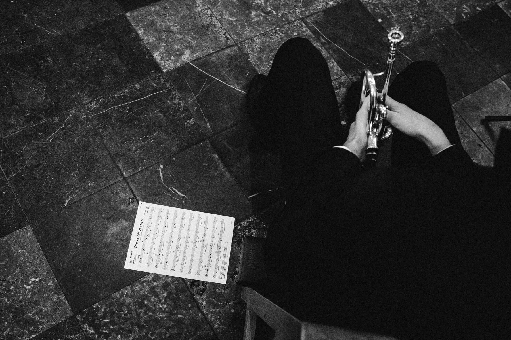
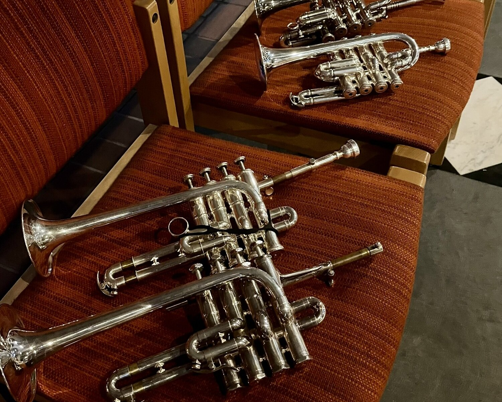

Professional brass ensembles for concerts, events, and cultural projects.

Our range spans from Bach and Gabrieli to the great classical works, all the way to the Beatles, Michael Jackson, and Ed Sheeran. We bring professional quality to every stage — from an intimate gathering to a grand celebration.
Classic, flexible, chamber music-oriented. Ideal for receptions, services, and intimate concert formats.
Full sound for any event. The classic brass formation — versatile and representative.
Festive and representative programs for large stages, city festivals, and special occasions.
Individual trumpeters for weddings, memorial services, or festive solo moments — with or without accompaniment.
Trumpet and organ — the classic pairing for church services, concerts, and solemn occasions.
Reliable, short-notice reinforcement for your (chamber) orchestra — even for individual program pieces.
Extensive availability and experience with piccolo trumpet, flugelhorn, and other specialty instruments.

Have you performed with us or made an inquiry? We'd love to hear your feedback.
Share Feedback